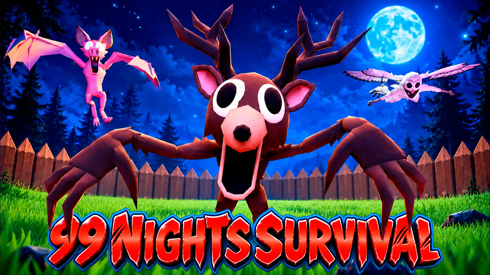
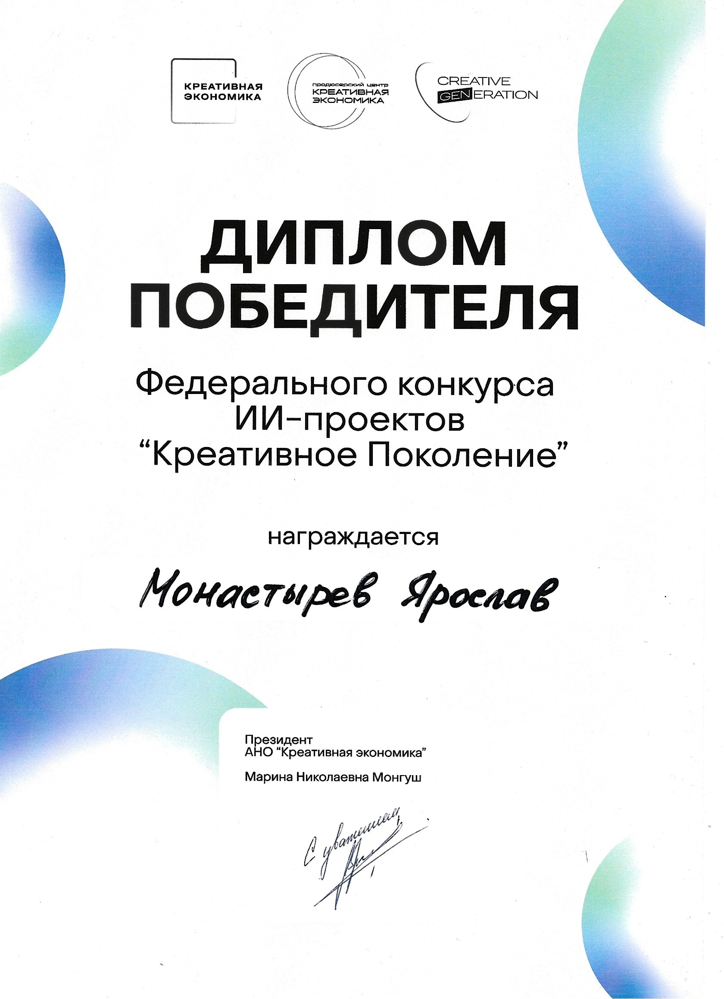

WINNING TEAM · 2025
Creative Generation
«Креативное Поколение» — HSE nomination, “Design Code of a Digital Mentor.” Shared project: Alex.
PORTFOLIO / GAMEPLAY & SYSTEMS DEVELOPER
Yaroslav Dmitrievich Monastyrev
Game developer focused on gameplay, systems and interfaces. A selection of my strongest work: released games with millions of minutes played, complex systems and team achievements.

RELEASED WORK / RECOGNITION / TEAM WINS
WINNING TEAM · 2025
«Креативное Поколение» — HSE nomination, “Design Code of a Digital Mentor.” Shared project: Alex.
FEATURED BY EPIC GAMES
Summer Pool Wars selected for Epic's Picks.
SUMMER CONTEST
Summer Pool Wars selected for a summer contest.

Creative Generation federal AI project competition
Yaroslav Monastyrev
01 / SELECTED PROJECTS
Four main case studies.
Results, gameplay and my contribution.
Playtime figures: Fortnite.GG, checked October 2026. Combined reach includes solo and team projects.
02 / ADDITIONAL EXPERIENCE
A few more projects showing experience
with other engines and genres.
s&box · Game jam · Two weeks
Developed PvP systems as part of a team during a two-week s&box game jam. A focused project in building multiplayer gameplay within a short production window.
Read the development thread ↗Android · Kotlin · Jetpack Compose
A financial education app where children learn budgeting and saving by caring for a virtual pet. My work covered frontend development and game design, including screens, minigame interfaces, sound, and interface feedback.
Unity · C# · FMOD
A 3D music sandbox for arranging sound blocks, connecting effects, and experimenting with Euclidean rhythms. Developed as a shared university project.
Unreal Engine
An additional Unreal Engine project in my development portfolio. More details available on request.
03 / BEHIND THE CONTROLLER
A game is more than its individual mechanics. It's how they work together.
Over five years, I've worked on more than 100 Fortnite Creative and UEFN projects, both independently and with teams. My work spans ideas and game design, architecture, gameplay systems, UI, and the ongoing work of improving a released game.
I write technical documentation in English, move between engines, and enjoy working on both the underlying systems and the player's experience.
Kosygin Russian State University
Information Systems and Technologies
Year 3 · Expected graduation: 2028